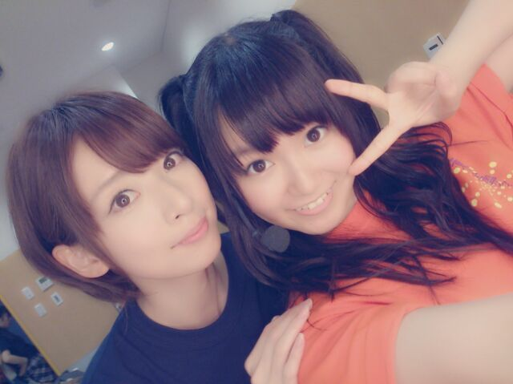
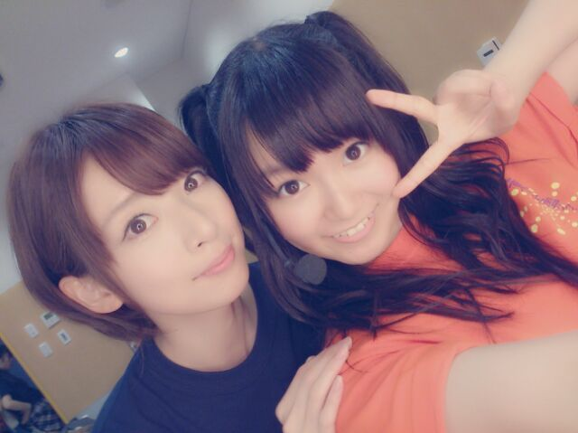
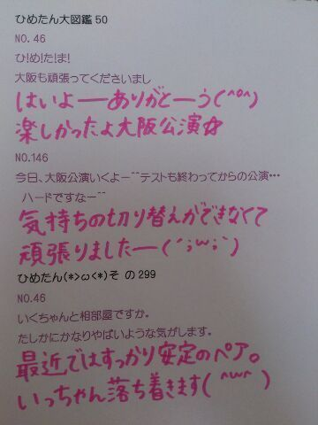

| 2013/09 02 Mon | ひめたん(*>ω<*)そ の336 |
個別握手会 京都！
来てくださった方
ありがとうございました( ^O^ )
ひめたんは当日入りしたので
雨へっちゃらーだったんだけど
みなさん大丈夫だったかな...

ツアーの名残でヘア撮らな！って思ったら
全身写真すっかり忘れてた(´・ω・｀)
ごめんほんっとごめんなさいい
お洋服は水色のワンピだよー♪
ずーさんに褒めてもらったよー
そしてヘアは 編み込みストレート！
写め撮る前に
ブラシしときゃよかったーてへ☆
全国ツアーのすぐあとってこともあって
ツアーの感想とかが多かったかな( ^O^ )
めちゃタイムリーな感じで
みなさんのお声が聞けてよかったー
代々木に活かせそうでーすー
ライブ行けなかったーて方にとっては
お久しぶりーになってしまったかな。
待っててくれてありがとーね☆
コメント読んでると
遠くの方いたけど顔みえたー？とか
うちわ・タオルみえたー？ってのが
たくさん来てたのでさらっとお答えすると
全 部 み え ま し た !!
これはもう真面目にぜんっっっぶみえた
だって距離近いもんほんまに！
代々木に行っても絶対に見つけるからね
だから行くよーって方は
楽しみに待っててくださーいね☆
ハーフツインくるくる好評で
ひめたん嬉しーな(〃ω〃)
またいつか握手会とかでもするねー♪

今回のツアーTだよー
なっなっみっさーんだよー///
やけど大丈夫ー？って
心配してくださった方たくさんいらっしゃって
心配されたがりなのでひめたん嬉しかったー///
あのね、スープ作ろうとして
お湯ばっしゃーかかったのよ(´・ω・｀)
でもすーぐ冷やしてすーぐ薬塗ったから大丈夫！
昨日だって元気に握手してたんだよー☆
ありがとーねーお騒がせしましたっ
サンライズ！
来週も乃木どこ出させてもらうよー
ヤンキーひめたーん！
質問ペース乱れ気味だったので
今日はたくさんのせてますー♪
でもまだ追いついてないから
気長ーに待っててね
来てくださった方
ありがとうございました( ^O^ )
ひめたんは当日入りしたので
雨へっちゃらーだったんだけど
みなさん大丈夫だったかな...

ツアーの名残でヘア撮らな！って思ったら
全身写真すっかり忘れてた(´・ω・｀)
ごめんほんっとごめんなさいい
お洋服は水色のワンピだよー♪
ずーさんに褒めてもらったよー
そしてヘアは 編み込みストレート！
写め撮る前に
ブラシしときゃよかったーてへ☆
全国ツアーのすぐあとってこともあって
ツアーの感想とかが多かったかな( ^O^ )
めちゃタイムリーな感じで
みなさんのお声が聞けてよかったー
代々木に活かせそうでーすー
ライブ行けなかったーて方にとっては
お久しぶりーになってしまったかな。
待っててくれてありがとーね☆
コメント読んでると
遠くの方いたけど顔みえたー？とか
うちわ・タオルみえたー？ってのが
たくさん来てたのでさらっとお答えすると
全 部 み え ま し た !!
これはもう真面目にぜんっっっぶみえた
だって距離近いもんほんまに！
代々木に行っても絶対に見つけるからね
だから行くよーって方は
楽しみに待っててくださーいね☆
ハーフツインくるくる好評で
ひめたん嬉しーな(〃ω〃)
またいつか握手会とかでもするねー♪
今回のツアーTだよー
なっなっみっさーんだよー///
やけど大丈夫ー？って
心配してくださった方たくさんいらっしゃって
心配されたがりなのでひめたん嬉しかったー///
あのね、スープ作ろうとして
お湯ばっしゃーかかったのよ(´・ω・｀)
でもすーぐ冷やしてすーぐ薬塗ったから大丈夫！
昨日だって元気に握手してたんだよー☆
ありがとーねーお騒がせしましたっ
サンライズ！
来週も乃木どこ出させてもらうよー
ヤンキーひめたーん！
質問ペース乱れ気味だったので
今日はたくさんのせてますー♪
でもまだ追いついてないから
気長ーに待っててね

 次のシングルの握手会でひめたん行こうか
次のシングルの握手会でひめたん行こうか
迷ってるんだけど万理華推しでも行って大丈夫？
万理華の話とかしても大丈夫？
大丈夫よ＼(^O^ )／
万理華についてふたりで語ろう←
お待ちしております♪
ひめたんを真の漢と見込んで
聞きたいんやケド、飛鳥さんの寝てる時の
クセって何なんですか？
どうも、真の漢ですこんにちは。
身を持って体験したので
あれかなーってなんとなくわかるけど
えー言っていいのかなー( ^ω^ )にやにや
ねーあしゅー！
Perfumeの「I still love U」ってゆう曲
知ってる？
めーいろーのよー
みーえーないードア〜♪
ひめたんにとって広島とは？
ふるさとってのはもちろんだけど
ひとつの目標でもあったりします
だから今は帰れないや。
まりっかと語り合ったらしいね
何話したの？ガールズトークってやつ？笑
だんーしーきーんせ〜♪
あれ、今日はよく歌う日だなー(笑)
ひめたんの小学校の時のあだ名は何ですか？
ひめちゃん、ひめか、
あとはいちばんの親友ちゃんからは
ひっぴーって呼ばれてた(*^ω^*)
今度握手のときに方言頼んでもいいかな？
うい！
できればシチュエーションとかあれば
具体的に考えてみてー！
ひめたんビームの影響か
何人かのメンバーがしてるけど
威力は元祖ひめたんビームが最強？
みんななかなか強力だけどねー
びーむの秘訣は
恥じらいを捨てることと
ひめたーんびーむ の たーん の溜めですよー
これを知ってるのはひめたーんだけのはず( ^^ )
ひめたんと話すの初めてでも
ひめたんビーム撃ってくれるよね？
もちろーんっ
ぜひ一度受けてみてねー♪
中学校のときの得意教科はなにー？
国語は感覚で点とれてたかなー
暗記科目はきちんと暗記する子でしたー
それが今では...い、いいえ何でも...
 最近、ひめたんにきゅんきゅんしちゃった///
最近、ひめたんにきゅんきゅんしちゃった///
これが...ひめきゅんになったってこと？
さらに・・さらに・・推していいですか？
ひめたんにキュンとするから、
僕もひめきゅんで良いかな？
ひめたんのコト応援してもええかな？
zepp NAGOYAのライブで
ひめたんの事好きになったんですが
応援してもいいですかー？
今度握手会行っても良いですか!?
握手とか行けないけど 、
ひめたんのこと推してもいい？
ありがとーう本当にありがとう！
その声が聞きたくていつもやってるので
すごーくすごーく励みになります∩^ω^∩
ひめたん推しでよかったーて
思っていたたげるよう頑張るから
よかったらついてきてくださーい///
とかいいつつ頼りないだろうから
背中押してもらえると助かりまーすっ
学校はじまたーあ
学生さんの中には 同じよーて方も
いるかもしれなーい
一緒に頑張ろうね(´;ω;｀)
...何で泣いているのだ顔文字よ。
い、一緒に頑張ろうっ(｀;ω;´)☆

(＊´・ω・＊)
コメント(296)
2013/09/02 21:36